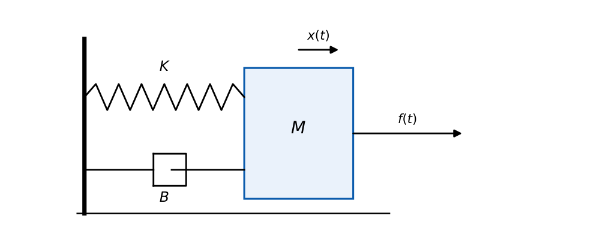
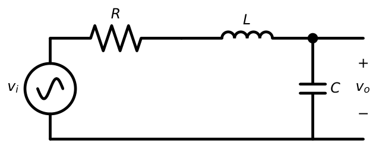
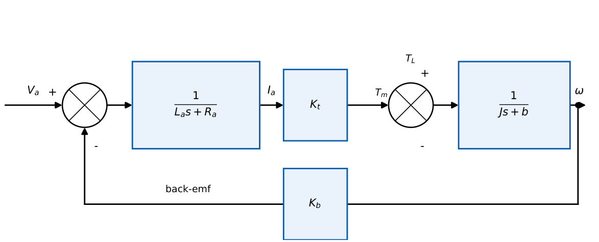

Mathematical Modeling of Physical Systems
In this chapter
Write the differential equation of a mechanical or electrical system, form its transfer function, use force–voltage and force–current analogies, and reduce a DC servo motor to \(K/(\tau s+1)\) or \(K/[s(\tau s+1)]\).
2.1 Core concept
A model is an equation (or block) relating input to output. For lumped, linear, time-invariant systems it is an ordinary differential equation with constant coefficients. Modelling assumptions: small displacements (linear springs), viscous (velocity-proportional) friction, rigid masses, negligible inductance/armature reaction unless stated.
2.2 Mechanical systems
2.2.1 Translational
Mass: \(f=M\ddot x\). Viscous damper: \(f=B\dot x\). Spring: \(f=Kx\). Newton’s law: \(\sum f=M\ddot x\).
Mass–spring–damper: \(M\ddot x+B\dot x+Kx=f(t)\ \Rightarrow\ \dfrac{X(s)}{F(s)}=\dfrac{1}{Ms^2+Bs+K}\).

2.2.2 Rotational
Inertia: \(T=J\ddot\theta\). Damper: \(T=B\dot\theta\). Torsional spring: \(T=K\theta\).
\(J\ddot\theta+B\dot\theta+K\theta=T(t)\Rightarrow \dfrac{\Theta(s)}{T(s)}=\dfrac{1}{Js^2+Bs+K}\).
Gear train (ratio \(N=N_1/N_2\)): \(\theta_2=\theta_1/N\); reflected inertia to shaft 1: \(J_1+J_2N^2\).
2.3 Electrical systems
For a series RLC with output across \(C\) (Figure 2.2): \begin{equation*} V_i=RI+L\dfrac{dI}{dt}+\dfrac1C\int I\,dt,\qquad \dfrac{V_o}{V_i}=\dfrac{1}{LCs^2+RCs+1}. \end{equation*}

2.4 Analogies
Comparing \(M\ddot x+B\dot x+Kx=f\) with \(L\ddot q+R\dot q+q/C=v\):
| Mechanical (translational) | Force–voltage (F–V) | Force–current (F–I) |
|---|---|---|
| Force \(f\) | voltage \(v\) | current \(i\) |
| Mass \(M\) | inductance \(L\) | capacitance \(C\) |
| Damper \(B\) | resistance \(R\) | conductance \(1/R\) |
| Spring \(K\) | elastance \(1/C\) | reciprocal inductance \(1/L\) |
| Displacement \(x\) | charge \(q\) | flux \(\phi\) |
| Velocity \(v\) | current \(i\) | voltage \(e\) |
| Series connection (same force) | parallel | series |
In the F–V analogy elements that share the same velocity appear in series electrically; in F–I they appear in parallel (nodal analysis: masses and springs at nodes, ground is the reference).
2.5 Electromechanical systems: armature-controlled DC motor
Armature: \(v_a=R_ai_a+L_a\dfrac{di_a}{dt}+e_b\), back emf \(e_b=K_b\omega\). Torque: \(T_m=K_ti_a\). Mechanical: \(T_m=J\dot\omega+b\omega\) (load torque zero). In Laplace form \begin{align*} I_a&=\frac{V_a-K_b\Omega}{L_as+R_a},\qquad K_tI_a=(Js+b)\Omega\\ \Rightarrow\ \frac{\Omega}{V_a}&=\frac{K_t}{(L_as+R_a)(Js+b)+K_tK_b},\qquad \frac{\Theta}{V_a}=\frac{K_t}{s\left[(L_as+R_a)(Js+b)+K_tK_b\right]}. \end{align*} If \(L_a\) is negligible: \(\dfrac{\Omega}{V_a}=\dfrac{K_m}{\tau_ms+1}\) with \(K_m=\dfrac{K_t}{R_ab+K_tK_b}\) and \(\tau_m=\dfrac{R_aJ}{R_ab+K_tK_b}\).

- Tachogenerator: output voltage \(e=K_g\dot\theta\), so \(E/\Theta=K_gs\).
- Two-phase ac servo motor: \(\Theta/E_c=K_m/[s(\tau_ms+1)]\) (position), with the speed–torque slope providing damping.
- Sensors: potentiometer (position), tacho (speed), encoder, LVDT, thermocouple. Actuators: motor, hydraulic cylinder, valve, heater.
\(M=1\) kg, \(B=3\) N s/m, \(K=2\) N/m: \(G=\dfrac{1}{s^2+3s+2}=\dfrac1{(s+1)(s+2)}\); poles \(-1,-2\) (overdamped); \(\omega_n=\sqrt2\), \(\zeta=3/(2\sqrt2)=1.06\).
\(R_a=2\ \Omega\), \(J=0.5\), \(b=0\), \(K_t=K_b=1\), \(L_a\approx0\): \(\dfrac{\Omega}{V_a}=\dfrac{1}{2(0.5)s+0+1}=\dfrac1{s+1}\): \(K_m=1\), \(\tau_m=1\) s.
A mass \(M\) with spring \(K\) to ground and damper \(B\) to ground driven by force \(f\) \(\Rightarrow\) current source \(f\) feeding \(C=M\), \(G=1/B\), \(L=1/K\) in parallel; velocity is the node voltage.
2.6 Physical interpretation
Mass and inductance store kinetic energy, spring and capacitor store potential energy, damper and resistor dissipate. Back-emf is why a motor’s speed saturates: the faster it spins, the smaller the net armature voltage.
For \(M\ddot x+B\dot x+Kx=f\): \(\omega_n=\sqrt{K/M}\), \(\zeta=\dfrac{B}{2\sqrt{KM}}\). Same in F–V: \(\omega_n=1/\sqrt{LC}\), \(\zeta=\tfrac R2\sqrt{C/L}\) (series RLC, output across \(C\)).
(i) F–V analogy maps mass \(\leftrightarrow\) \(L\), but F–I maps mass \(\leftrightarrow\) \(C\). (ii) Gear ratio: inertia reflected to the other shaft scales as square of the ratio. (iii) Back-emf \(K_b\omega\) is proportional to speed, not to current.
Q1. In the force–voltage analogy, mass corresponds to (A) resistance (B) capacitance (C) inductance (D) conductance.
Q2. In the force–current analogy, a spring corresponds to (A) capacitor (B) inductor (C) resistor (D) voltage source.
Q3. Neglecting \(L_a\), the armature-controlled DC motor speed response to a step in \(V_a\) is (A) ramp (B) first-order exponential (C) oscillatory (D) sinusoidal.
Answers: Q1 (C). Q2 (B): \(1/K\leftrightarrow L\). Q3 (B).
Q4. For \(2\ddot x+8\dot x+18x=f\), the damping ratio is (A) \(0.5\) (B) \(0.67\) (C) \(1\) (D) \(1.33\).
Q5. A motor with \(J_1=1\) drives through gears \(N_1/N_2=1/4\) (\(N=1/4\), load side larger) a load \(J_2=16\) on shaft 2. Inertia reflected to shaft 1 is (A) \(2\) (B) \(17\) (C) \(5\) (D) \(256\).
Answers: Q4 (B): \(\zeta=8/(2\sqrt{2\cdot18})=8/12=0.667\). Q5 (A): \(J_1+J_2N^2=1+16/16=2\).
Q6. Armature-controlled motor, \(L_a\) neglected: \(R_a=1\ \Omega\), \(K_t=K_b=0.5\) V s/rad, \(J=0.1\), \(b=0\). The time constant is s.
Answers: Q6: \(\tau=R_aJ/(K_tK_b)=0.1/0.25=0.4\) s.
Q7. Which are correct? (A) Tacho gives \(E/\Theta=Ks\) (B) Back-emf \(\propto\) speed (C) Spring stores kinetic energy (D) F–V analogy: damper \(\leftrightarrow\) resistance.
Answers: Q7: (A), (B), (D).
\(G(s)=X(s)/F(s)\) for a mass on a spring with damper; the unit-step force gives steady-state displacement \(1/K\) (final value). E.g. \(K=4\) gives \(0.25\) m.
T1. Write the transfer function of a series RLC with output across \(R\).
T2. Give \(\zeta\) and \(\omega_n\) for \(M=1\), \(B=2\), \(K=25\).
Answers: T1: \(\dfrac{RCs}{LCs^2+RCs+1}\). T2: \(\omega_n=5\), \(\zeta=0.2\).
- \(M\ddot x+B\dot x+Kx=f\); \(G=1/(Ms^2+Bs+K)\); \(\omega_n=\sqrt{K/M}\), \(\zeta=B/2\sqrt{KM}\).
- F–V: \(M\to L\), \(B\to R\), \(K\to1/C\); F–I: \(M\to C\), \(B\to1/R\), \(K\to1/L\).
- DC motor: \(\Theta/V_a=K_t/\{s[(L_as+R_a)(Js+b)+K_tK_b]\}\); \(L_a\to0\): \(K_m/(\tau_ms+1)\).
- Reflected inertia across gears scales with the ratio squared.